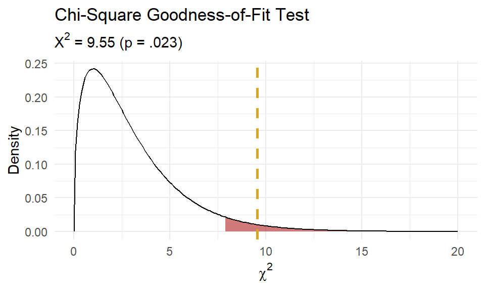
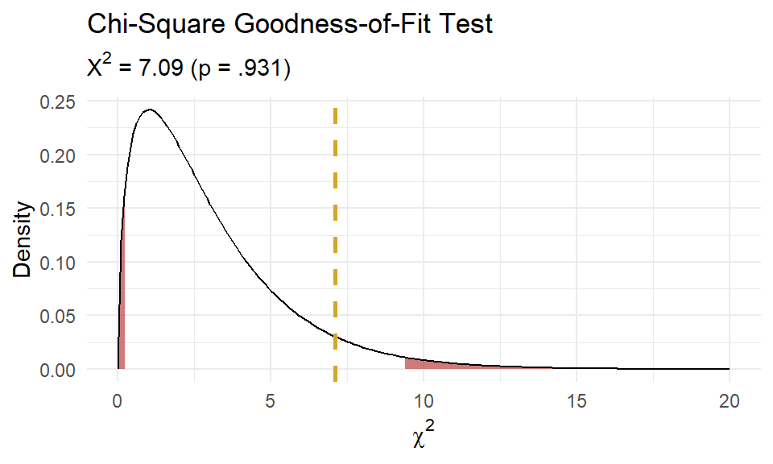
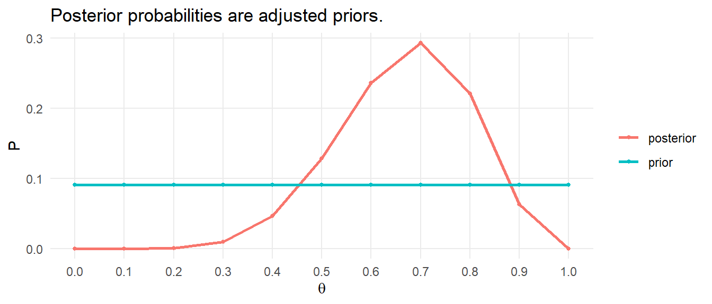
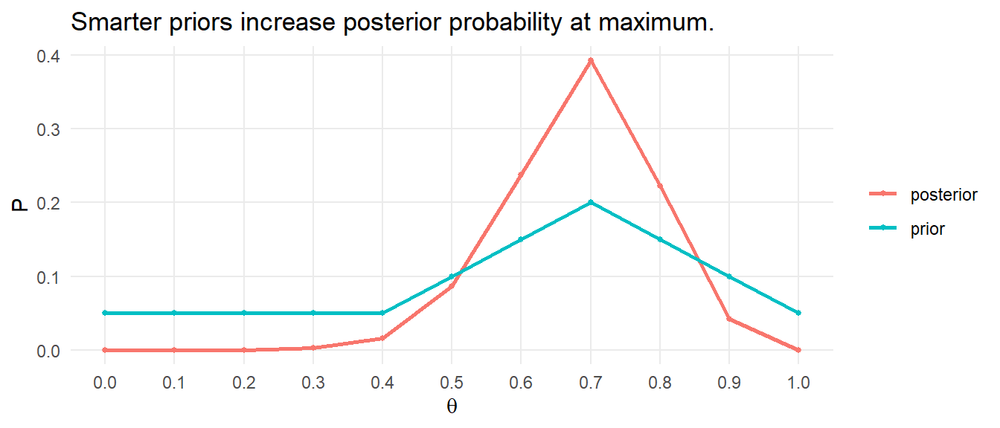
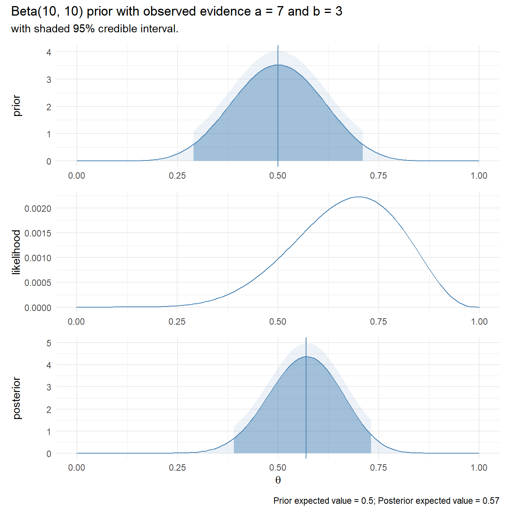
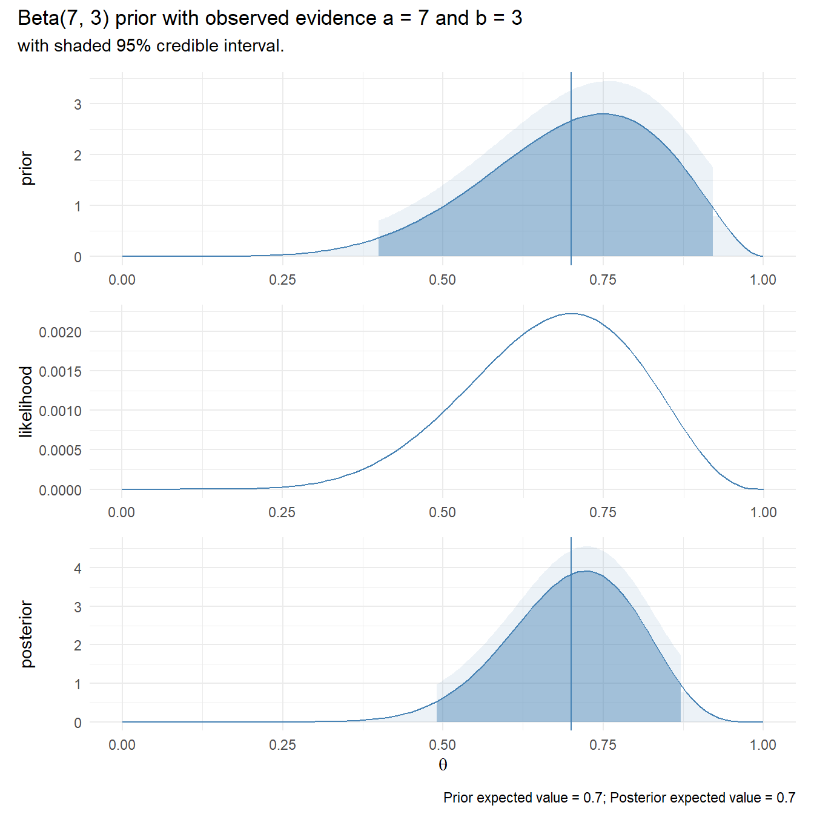
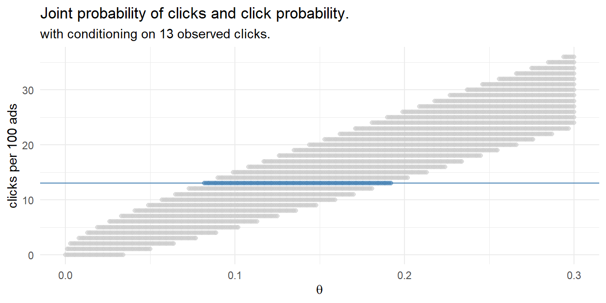

Chapter 3 Multi-Group Comparison Tests
Comparison tests look for differences among group means. They can be used to test the effect of a categorical variable on the mean value of some other characteristic.
T-tests are used when comparing the means of precisely two groups (e.g. the average heights of men and women). ANOVA and MANOVA tests are used when comparing the means of more than two groups (e.g. the average heights of children, teenagers, and adults).
Quantitative ~ Categorical
3.1 Independent t-Test
3.2 Paired t-Test
3.3 Sign est
3.4 Wilcoxon Rank-Sum Test
3.5 Wilcoxon Signed-Rank Test
3.6 ANOVA
Most of these notes are gleaned from PSU STAT-502 “Analysis of Variance and Design of Experiments” covers ANOVA. Laerd Statistics is useful for writing up your results for reports.
Classic analysis of variance (ANOVA) compares the mean responses from experimental studies. However, ANOVA also compares the mean responses from observational studies, but conclusions are just less rigorous.
3.6.1 One-Way ANOVA
Use the one-way ANOVA test to compare the mean response of a continuous dependent variable among the levels of a factor variable.
Here is a case study. Researchers compare the plant growth among three fertilizers and a control group. Data set greenhouse contains 6 observations per each of the k = 4 treatment levels (N = 24) - a balanced design.
All three fertilizers produced more growth than the control group. Fertilizers F1 and F3 appear to be about tied for most growth, but it is unclear if the fertilizers are significantly different from each other.

Treated |
||||||
|---|---|---|---|---|---|---|
| Control (N=6) |
F1 (N=6) |
F2 (N=6) |
F3 (N=6) |
All treated (N=18) |
Overall (N=24) |
|
| Growth (cm) | ||||||
| Mean (SD) | 21.0 (1.00) | 28.6 (2.44) | 25.9 (1.90) | 29.2 (1.29) | 27.9 (2.35) | 26.2 (3.69) |
| Median [Min, Max] | 21.0 [19.5, 22.5] | 28.3 [25.0, 32.0] | 26.3 [22.5, 28.0] | 29.4 [27.5, 31.0] | 28.0 [22.5, 32.0] | 27.3 [19.5, 32.0] |
greenhouse_desc <- greenhouse %>%
group_by(group) %>%
summarize(.groups = "drop", n = n(), mean = mean(growth), sd = sd(growth))Data is presented as mean \(\pm\) standard deviation. Plant growth (growth) increased from the control (n = 6, 21 \(\pm\) 1.0), to fertilizer 1 (n = 6, 28.6 \(\pm\) 2.4), fertilizer 2 (n = 6, 25.8666667 \(\pm\) 1.9), and fertilizer 3 (n = 6, 29.2 \(\pm\) 1.3) fertilizer groups.
ANOVA decomposes the deviation of observation \(Y_{ij}\) around the overall mean \(\bar{Y}_{..}\) into two parts: the deviation of the observations around their treatment means, \(SSE\), and the deviation of the treatment means around the overall mean, \(SSR\). Their ratio, \(F = SSR/SSE\) follows an F-distribution with \(k-1\) numerator dof and \(N-k\) denominator dof. The more observation variance captured by the treatments, the large is \(F\), and the less likely that the null hypothesis, \(H_0 = \mu_1 = \mu_2 = \cdots = \mu_k\) is true.
| Source | SS | df | MS | F |
|---|---|---|---|---|
| SSR | \(\sum{n_i(\bar{Y}_{i.} - \bar{Y}_{..})^2}\) | \(k - 1\) | \({SSR}/{(k - 1)}\) | \({MSR}/{MSE}\) |
| SSE | \(\sum(Y_{ij} - \bar{Y}_{i.})^2\) | \(N - k\) | \({SSE}/{(N - k)}\) | |
| SST | \(\sum(Y_{ij} - \bar{Y}_{..})^2\) | \(N - 1\) |
Run an ANOVA test in R like this:
greenhouse_aov <- aov(growth ~ group, data = greenhouse)
greenhouse_anova <- anova(greenhouse_aov)
greenhouse_anova %>%
tidy() %>%
flextable() %>%
set_table_properties(width = 0.8, layout = "autofit") %>%
colformat_num(j = c(3, 4, 5), digits = 1) %>%
colformat_num(j = 6, digits = 4) %>%
set_caption("Results of ANOVA for Growth vs Fertilizer Group")term | df | sumsq | meansq | statistic | p.value |
group | 3 | 251.4 | 83.8 | 27.5 | 0.0000 |
Residuals | 20 | 61.0 | 3.1 |
The one-way ANOVA indicates amount of growth was statistically significantly different for different levels of fertilizer group, F(3, 20) = 27.5, p < .0001.
BTW, it is worth noting the relationship with linear regression. The regression model intercept is the overall mean and the coefficient estimators indirectly indicate the group means. The analysis of variance table in a regression model shows how much of the overall variance is explained by those coefficient estimators. It’s the same thing.
You may also want to report the \(\omega^2\) effect size,
\[\omega^2 = \frac{SSR - df_R \cdot MSE}{MSE + SST}\]
greenhouse_omega <- sjstats::anova_stats(greenhouse_anova) %>%
filter(term == "group") %>%
pull(omegasq)## Registered S3 methods overwritten by 'lme4':
## method from
## cooks.distance.influence.merMod car
## influence.merMod car
## dfbeta.influence.merMod car
## dfbetas.influence.merMod car\(\omega^2\) ranges from -1 to +1. In this example, \(\omega^2\) is 0.768.
3.6.1.1 ANOVA Conditions
The ANOVA test applies when the dependent variable is continuous, the independent variable is categorical, and the observations are independent within groups. Independent means the observations should be from a random sample, or from an experiment using random assignment. Each group’s size should be less than 10% of its population size. The groups must also be independent of each other (non-paired, and non-repeated measures). Additionally, there are three conditions related to the data distribution. If any condition does not hold, and the suggested work-arounds do not work switch to the non-parametric [Kruskal-Wallis Test].
- No outliers. There should be no significant outliers in the groups. Outliers exert a large influence on the mean and standard deviation. Test with a box plot. If there are outliers, you might be able to drop them or transform the data.
- Normality. Each group’s values should be nearly normally distributed (“nearly” because ANOVA is considered robust to the normality assumption). This condition is especially important with small sample sizes. Test with the Q-Q plots or the Shapiro-Wilk test for normality. If the data is very non-normal, you might be able to transform your response variable.
- Equal Variances. The group variances should be roughly equal. This condition is especially important when sample sizes differ. Test with a box plot, rule of thumb, or one of the formal homogeneity of variance (external) tests such as Bartlett, and Levene. If the variances are very different, use a Games-Howell post hoc test instead of the Tukey post hoc test.
Outliers
Assess outliers with a box plot. Box plot whiskers extend up to 1.5*IQR from the upper and lower hinges and outliers (beyond the whiskers) are are plotted individually. Our example includes an outlier in fertilizer group F2.

Outliers might occur from data entry errors or measurement errors, so investigate and fix or throw them out. However, if the outlier is a genuine extreme value, you still have a couple options before reverting to Kruskal-Wallis.
- Transform the dependent variable. Don’t do this unless the data is also non-normal. It also has the downside of making interpretation more difficult.
- Leave it in if it doesn’t affect the conclusion (compared to taking it out).
Lets try removing the outlier (id# 13).
greenhouse_aov2 <- aov(growth ~ group, data = greenhouse %>% filter(!id == 13))
greenhouse_anova2 <- anova(greenhouse_aov2)term | df | sumsq | meansq | statistic | p.value |
group | 3 | 251.0 | 83.7 | 33.5 | 0.0000 |
Residuals | 19 | 47.4 | 2.5 | ||
Note: One outlier in group F2 removed. | |||||
The conclusion is the same, so leaving it in is fine!
Normality
You can assume the populations are normally distributed if \(n_j >= 30\). Otherwise, try the Q-Q plot, or skewness and kurtosis values, or histograms. If you still don’t feel confident about normality, run a [Shapiro-Wilk Test] or Kolmogorov-Smirnov Test. If \(n_j >= 50\), stick with graphical methods because at larger sample sizes Shapiro-Wilk flags even minor deviations from normality.
The QQ plots below appear to be approximately normal.
greenhouse %>%
ggplot(aes(sample = growth)) +
stat_qq() +
stat_qq_line(col = "goldenrod") +
facet_wrap(~group) +
theme_minimal() +
labs(title = "Normal Q-Q Plot")
The Shapiro-Wilk test corroborates this conclusion - it fails to reject the null hypothesis of normally distributed populations.
x <- by(greenhouse, greenhouse$group, function(x) shapiro.test(x$growth) %>% tidy())
x[1:4] %>%
bind_rows() %>%
mutate(group = names(x)) %>%
dplyr::select(group, everything(), - method) %>%
flextable() %>%
set_table_properties(width = 0.6, layout = "autofit") %>%
set_caption("Shapiro-Wilk Normality Test")group | statistic | p.value |
Control | 0.9764896 | 0.9328373 |
F1 | 0.9803233 | 0.9531535 |
F2 | 0.9256945 | 0.5472862 |
F3 | 0.9705960 | 0.8964141 |
If the data is not normally distributed, you still have a couple options before reverting to Kruskal-Wallis.
- Transform the dependent variable. Transformations will generally only work when the distribution of scores in all groups are the same shape. They also have the drawback of making the data less interpretable.
- carry on regardless. One-way ANOVA is fairly robust to deviations from normality, particularly if the sample sizes are nearly equal.
Equal Variances
The equality of sample variances condition is less critical when sample sizes are similar among the groups. One rule of thumb is that no group’s standard deviation should be more than double that of any other. In this case F1 is more than double Control.
group | sd |
Control | 1.000000 |
F1 | 2.437212 |
F2 | 1.899123 |
F3 | 1.288410 |
There are two other common tests, Bartlett and Levene. NIST has a good write-up for Levene and for Bartlett. Levene is less sensitive than Bartlett to departures from normality, so if you know your data is normally distributed, then use Bartlett.
Levene’s test fails to reject the null hypothesis of equality of variance.
greenhouse_levene <- car::leveneTest(growth ~ group, data = greenhouse)
greenhouse_levene %>%
tidy() %>%
flextable() %>%
set_table_properties(width = 0.6, layout = "autofit") %>%
set_caption("Levene's Test for Homogeneity of Variance")term | df | statistic | p.value |
group | 3 | 1.049116 | 0.3926038 |
20 | NA | NA |
So does Bartlett.
bartlett.test(growth ~ group, data = greenhouse) %>%
tidy() %>%
dplyr::select(-method) %>%
flextable() %>%
set_table_properties(width = 0.6, layout = "autofit") %>%
set_caption("Bartlett's Test for Homogeneity of Variance")statistic | p.value | parameter |
4.114342 | 0.249379 | 3 |
Heterogeneity is a common problem in ANOVA. Transforming the response variable can often remove the heterogeneity. The Box-Cox procedure can help find a good transformation. The MASS::boxcox() function calculates a profile of log-likelihoods for a power transformation of the response variable \(Y^\lambda\).
| \(\lambda\) | \(Y^\lambda\) | Transformation |
|---|---|---|
| 2 | \(Y^2\) | Square |
| 1 | \(Y^1\) | (no transformation) |
| .5 | \(Y^{.5}\) | Square Root |
| 0 | \(\ln(Y)\) | Log |
| -.5 | \(Y^{-.5}\) | Inverse Square Root |
| -1 | \(Y^{-1}\) | Inverse |
The Box-Cox procedure does not recommend any particular transformation of the data in this case.

3.6.1.2 Custom Contrasts
Taking this route is appropriate if you have specific hypotheses about the differences between the groups of your independent variable. For example, we might want to test whether the mean of the treatments differ from the control group, \(H_0: \sum_i^K{c_i u_i} = 0\) where \(c_i = (1, -1/3, -1/3, -1/3)\). You can test a constrast using the multcomp package.
greenhouse_glht <- glht(greenhouse_aov, linfct = mcp(group = c(-1, 1/3, 1/3, 1/3)))
greenhouse_glht_smry <- summary(greenhouse_glht)
greenhouse_confint <- confint(greenhouse_glht)
greenhouse_glht_smry##
## Simultaneous Tests for General Linear Hypotheses
##
## Multiple Comparisons of Means: User-defined Contrasts
##
##
## Fit: aov(formula = growth ~ group, data = greenhouse)
##
## Linear Hypotheses:
## Estimate Std. Error t value Pr(>|t|)
## 1 == 0 6.8889 0.8235 8.365 5.81e-08 ***
## ---
## Signif. codes: 0 '***' 0.001 '**' 0.01 '*' 0.05 '.' 0.1 ' ' 1
## (Adjusted p values reported -- single-step method)Growth was statistically significantly higher in the fertilizer groups (mean of 27.9) compared to the sedentary group (21 \(\pm\) 1), a mean difference of 6.8888889 (95% CI, 5.1711032 to 8.6066746), p = 5.806853710^{-8}.
3.6.1.3 Tukey Post Hoc Test
The F test does not indicate which populations cause the rejection of \(H_0\). For this, use one of the post-hoc tests: Tukey, Fisher’s Least Significant Difference (LSD), Bonferroni, Scheffe, or Dunnett. Post hoc tests are appropriate if you are investigating all possible pairwise comparisons with no specific hypotheses about specific groups differing from others.
Here is the Tukey test. As expected, all three fertilizer factor levels differ from the control. F3 differed from F2, but F1 was not significantly different from either F2 or F3.
greenhouse_tukey <- TukeyHSD(greenhouse_aov)
greenhouse_tukey %>%
tidy() %>%
flextable() %>%
set_table_properties(width = 0.8, layout = "autofit") %>%
colformat_num(j = c(4:6), digits = 1) %>%
colformat_num(j = 7, digits = 3) %>%
set_caption("Tukey multiple comparisons of means") %>%
footnote(i = 1, j = c(1),
value = as_paragraph(
paste0("95% family-wise confidence level\n",
"Fit: aov(formula = growth ~ group, data = greenhouse)")),
ref_symbols = c(""),
part = "header")term | contrast | null.value | estimate | conf.low | conf.high | adj.p.value |
group | F1-Control | 0 | 7.6 | 4.8 | 10.4 | 0.000 |
group | F2-Control | 0 | 4.9 | 2.0 | 7.7 | 0.001 |
group | F3-Control | 0 | 8.2 | 5.4 | 11.0 | 0.000 |
group | F2-F1 | 0 | -2.7 | -5.6 | 0.1 | 0.060 |
group | F3-F1 | 0 | 0.6 | -2.2 | 3.4 | 0.932 |
group | F3-F2 | 0 | 3.3 | 0.5 | 6.2 | 0.017 |
95% family-wise confidence level | ||||||
Data are mean \(\pm\) standard deviation. There was an increase in growth from 21 \(\pm\) 1 in the control group to 28.6 \(\pm\) 2.4 in the group with fertilizer F1, an increase of 7.6 (95% CI, 4.8 to 10.4), which was statistically significant (p < .0001)… etc.
3.6.1.4 Reporting a One-Way ANOVA
Report like this.
A one-way ANOVA was conducted to determine if plant growth was different for groups with different fertilizer types. Plants were classified into four groups: control (n = 6), fertilizer 1 (n = 6), fertilizer 2 (n = 6), and fertilizer 3 (n = 6). There was a single outlier, as assessed by boxplot, and was retained because it did not change the conclusions; data was normally distributed for each group, as assessed by Shapiro-Wilk test (p > .05); and there was homogeneity of variances, as assessed by Levene’s test of homogeneity of variances (p = 0.393). Data is presented as mean \(\pm\) standard deviation. Plant growth was statistically significantly different between different fertilizer groups, F(3, 20) = 27.465, p < .0005, \(\omega^2\) = 0.768. Plant growth increased from the control (21 \(\pm\) 1.0), to fertilizer F1 (28.6 \(\pm\) 2.4), fertilizer F2 (25.9 \(\pm\) 1.9), and fertilizer F3 (29.2 \(\pm\) 1.3) fertilizer groups. Tukey post hoc analysis revealed statistically significant increases from control to F1 (7.6, 95% CI (4.8 to 10.4), p = 1.6e-06), control to F2 (4.9, 95% CI (2.0 to 7.7), p = 0.00055), and control to F3 (8.2, 95% CI (5.4 to 11.0), p = 5.1e-07), as well as the increase from F2 to F3 (3.3, 95% CI (0.51 to 6.2), p = 0.017), but there were no statistically significant group differences between F1 and F2 or F1 and F3.
3.6.2 Welch’s ANOVA w/Games-Howell
Welch’s ANOVA test is an alternative to the one-way ANOVA test in cases where the equality of variances assumption is violated.
Here is a case study. Researchers compare the force (in newtons) generated in three steps. Data set newton contains 30 observations per each of the k = 3 step levels (N = 90) - a balanced design.

| A (N=30) |
B (N=30) |
C (N=30) |
Overall (N=90) |
|
|---|---|---|---|---|
| Force (newtons) | ||||
| Mean (SD) | 429 (88.7) | 527 (97.6) | 649 (145) | 535 (144) |
| Median [Min, Max] | 415 [306, 692] | 499 [417, 759] | 615 [437, 939] | 498 [306, 939] |
newton_desc <- newton %>%
group_by(step) %>%
summarize(.groups = "drop", n = n(), mean = mean(newtons), sd = sd(newtons))Data is presented as mean \(\pm\) standard deviation. Force (newtons) increased from step 1 (n = 30, 429 \(\pm\) 88.7), to step 2 (n = 30, 527 \(\pm\) 97.6), to step 3 (n = 30, 649 \(\pm\) 145).
Start by running the standard ANOVA test:
newton_aov <- aov(newtons ~ step, data = newton)
newton_anova <- anova(newton_aov)
newton_anova %>%
tidy() %>%
flextable() %>%
set_table_properties(width = 0.8, layout = "autofit") %>%
colformat_num(j = c(3, 4, 5), digits = 1) %>%
colformat_num(j = 6, digits = 4) %>%
set_caption("Results of ANOVA for Force vs Step")term | df | sumsq | meansq | statistic | p.value |
step | 2 | 727,295.0 | 363,647.5 | 28.4 | 0.0000 |
Residuals | 87 | 1,113,208.1 | 12,795.5 |
The one-way ANOVA indicates amount of force was statistically significantly different for different levels of step, F(2, 87) = 28.4, p < .0001.
3.6.2.1 ANOVA Conditions
Check the three ANOVA conditions: no outliers, normality, and equal variances.
Outliers
Assess outliers with a box plot. Our example includes an outlier in step A.

You can either transform the dependent variable, see if taking it out changes your conclusion, or use a non-parametric test. Let’s try removing the outlier (id# 13).
newton2 <- newton %>% mutate(id = row_number())
newton_aov2 <- aov(newtons ~ step, data = newton2 %>% filter(!id == 7))
newton_anova2 <- anova(newton_aov2)term | df | sumsq | meansq | statistic | p.value |
step | 2 | 773,863.5 | 386,931.7 | 31.9 | 0.0000 |
Residuals | 86 | 1,041,642.7 | 12,112.1 | ||
Note: One outlier in step A removed. | |||||
The conclusion is the same, so leaving it in is fine!
Normality
You can assume the populations are normally distributed if \(n_j >= 30\), but I’ll examine the Q-Q plot and run a [Shapiro-Wilk Test] anyway.
The QQ plots below appear to be approximately normal…
newton %>%
ggplot(aes(sample = newtons)) +
stat_qq() +
stat_qq_line(col = "goldenrod") +
facet_wrap(~step) +
theme_minimal() +
labs(title = "Normal Q-Q Plot")
…but the Shapiro-Wilk test fails for step A and B – evidence of its sensitivity for large n. I will ignore this violation.
x <- by(newton, newton$step, function(x) shapiro.test(x$newtons) %>% tidy())
x[1:3] %>%
bind_rows() %>%
mutate(group = names(x)) %>%
dplyr::select(group, everything(), - method) %>%
flextable() %>%
set_table_properties(width = 0.6, layout = "autofit") %>%
set_caption("Shapiro-Wilk Normality Test")group | statistic | p.value |
A | 0.9254862 | 0.03730756 |
B | 0.9052405 | 0.01130931 |
C | 0.9466073 | 0.13705759 |
Equal Variances
The equality of sample variances condition is less critical when sample sizes are similar among the groups. Following the rule of thumb that no group’s standard deviation be more than double that of any other, we look okay.
step | sd |
A | 88.66137 |
B | 97.58970 |
C | 144.92031 |
However, Levene’s test rejects the null hypothesis of equality of variance.
newton_levene <- car::leveneTest(newtons ~ step, data = newton)
newton_levene %>%
tidy() %>%
flextable() %>%
set_table_properties(width = 0.6, layout = "autofit") %>%
set_caption("Levene's Test for Homogeneity of Variance")term | df | statistic | p.value |
group | 2 | 3.970743 | 0.02237434 |
87 | NA | NA |
So does Bartlett.
bartlett.test(newtons ~ step, data = newton) %>%
tidy() %>%
dplyr::select(-method) %>%
flextable() %>%
set_table_properties(width = 0.6, layout = "autofit") %>%
set_caption("Bartlett's Test for Homogeneity of Variance")statistic | p.value | parameter |
8.196935 | 0.01659809 | 2 |
We could transform the response variable to remove the heterogeneity. The Box-Cox procedure suggests an inverse square root transformation.
| \(\lambda\) | \(Y^\lambda\) | Transformation |
|---|---|---|
| 2 | \(Y^2\) | Square |
| 1 | \(Y^1\) | (no transformation) |
| .5 | \(Y^{.5}\) | Square Root |
| 0 | \(\ln(Y)\) | Log |
| -.5 | \(Y^{-.5}\) | Inverse Square Root |
| -1 | \(Y^{-1}\) | Inverse |
The Box-Cox procedure does not recommend any particular transformation of the data in this case.

newton3 <- newton %>%
mutate(newtons_isr = newtons^(-0.5))
newton_levene3 <- car::leveneTest(newtons_isr ~ step, data = newton3)
newton_levene3 %>%
tidy() %>%
flextable() %>%
set_table_properties(width = 0.6, layout = "autofit") %>%
set_caption("Levene's Test for Homogeneity of Variance")term | df | statistic | p.value |
group | 2 | 0.5234038 | 0.5943542 |
87 | NA | NA |
Huzzah - it worked! Before we continue on, we should backtrack and re-test the outliers and normality conditions. However, because the point of this section is to try Welch’s ANOVA, I’m going use it instead of transforming the response variable. Use oneway.test(..., var.equal = FALSE) to run a Welch’s ANOVA.
##
## One-way analysis of means (not assuming equal variances)
##
## data: newtons and step
## F = 26.19, num df = 2.000, denom df = 56.184, p-value = 9.196e-09Welch’s ANOVA indicates amount of force was statistically significantly different for different steps, F(2, 56.2) = 26.2, p < .0001.
I don’t think you can calculate \(\omega^2\) for a Welch’s ANOVA object.
3.6.2.2 Games-Howell Post Hoc Test
Use the PMCMRplus::gamesHowellTest() to run the Games-Howell post hoc test. As expected, the three steps differ from each other.
newton_games_howell <- rstatix::games_howell_test(newton, newtons ~ step)
newton_games_howell %>%
flextable() %>% autofit() %>% set_caption("Games-Howell Post Hoc Test").y. | group1 | group2 | estimate | conf.low | conf.high | p.adj | p.adj.signif |
newtons | A | B | 97.64867 | 39.73284 | 155.5645 | 4.41e-04 | *** |
newtons | A | C | 219.74333 | 144.72971 | 294.7570 | 1.62e-08 | **** |
newtons | B | C | 122.09467 | 45.08372 | 199.1056 | 1.00e-03 | *** |
3.6.2.3 Reporting a Welch’s ANOVA
A Welch’s ANOVA was conducted to determine if force was different for different steps. Measurements were classified into three groups: A (n = 30), B (n = 30), and C (n = 30). There was a single outlier, as assessed by boxplot, and was retained because it did not change the conclusions; data was normally distributed for each group, as assessed by Q-Q plot. ; Homogeneity of variances was violated, as assessed by Levene’s Test of Homogeneity of Variance (p = 0.022). Data is presented as mean \(\pm\) standard deviation. Force was statistically significantly different between different steps, F(2, 56.1842568) = 26.19, p < .0005. Force increased from A (429.1793333 \(\pm\) 88.66137), to B (526.828 \(\pm\) 97.6), to C (648.9226667 \(\pm\) 144.9). Games-Howell post hoc analysis revealed statistically significant increases from A to B, (97.6, 95% CI (39.7 to 39.7), p = 4e-04), A to C (219.7, 95% CI (144.7 to 144.7), p = 2e-08), and B to C (122.1, 95% CI (45.1 to 45.1), p = 0.001).
3.6.3 MANOVA
Multi-factor ANOVA (MANOVA) is a method to compare mean responses by treatment factor level of two or more treatments applied in combination. The null hypotheses are \(H_0: \mu_{1.} = \mu_{2.} = \dots = \mu_{a.}\) for the \(a\) levels of factor 1, \(H_0: \mu_{.1} = \mu_{.2} = \dots = \mu_{.b}\) for the \(b\) levels of factor 2, etc. for all the factors in the experiment, and $H_0: $ no interaction for all the factor interactions.
There are two equivalent ways to state the MANOVA model:
\[Y_{ijk} = \mu_{ij} + \epsilon_{ijk}\]
In this notation \(Y_{ijk}\) refers to the \(k^{th}\) observation in the \(j^{th}\) level of factor two and the \(i^{th}\) level of factor 1. Potentially there could be additional factors. This model formulation decomposes the response into a cell mean and an error term. The second makes the factor effect more explicit and is thus more common:
\[Y_{ijk} = \mu + \alpha_i + \beta_j + (\alpha\beta)_{ij} + \epsilon_{ijk}\]
3.6.4 Multiple Variance Comparison F Test
3.6.5 Example
A study investigates the relationship between oxygen update and two explanatory variables: smoking, and type of stress test. A sample of \(n = 27\) persons, 9 non-smoking, 9 moderately-smoking, and 9 heavy-smoking are divided into three stress tests, bicycle, treadmill, and steps and their oxygen uptake was measured. Is oxygen uptake related to smoking status and type of stress test? Is there an interaction effect between smoking status and type of stress test?
library(dplyr)
library(ggplot2)
library(nortest) # for Anderson-Darling test
library(stats) # for anova
smoker <- c(1, 1, 1, 1, 1, 1, 1, 1, 1,
2, 2, 2, 2, 2, 2, 2, 2, 2,
3, 3, 3, 3, 3, 3, 3, 3, 3)
stress <- c(1, 1, 1, 2, 2, 2, 3, 3, 3,
1, 1, 1, 2, 2, 2, 3, 3, 3,
1, 1, 1, 2, 2, 2, 3, 3, 3)
oxytime <- c(12.8, 13.5, 11.2, 16.2, 18.1, 17.8, 22.6, 19.3, 18.9,
10.9, 11.1, 9.8, 15.5, 13.8, 16.2, 20.1, 21.0, 15.9,
8.7, 9.2, 7.5, 14.7, 13.2, 8.1, 16.2, 16.1, 17.8)
oxy <- data.frame(oxytime, smoker, stress)
oxy$smoker <- ordered(oxy$smoker,
levels = c(1, 2, 3),
labels = c("non-smoker", "moderate", "heavy"))
oxy$stress <- factor(oxy$stress,
labels = c("bicycle", "treadmill", "steps"))
lm_oxy <- lm(oxytime~smoker+stress+smoker*stress, data = oxy)
anova(lm_oxy)## Analysis of Variance Table
##
## Response: oxytime
## Df Sum Sq Mean Sq F value Pr(>F)
## smoker 2 84.899 42.449 12.8967 0.0003348 ***
## stress 2 298.072 149.036 45.2793 9.473e-08 ***
## smoker:stress 4 2.815 0.704 0.2138 0.9273412
## Residuals 18 59.247 3.291
## ---
## Signif. codes: 0 '***' 0.001 '**' 0.01 '*' 0.05 '.' 0.1 ' ' 1